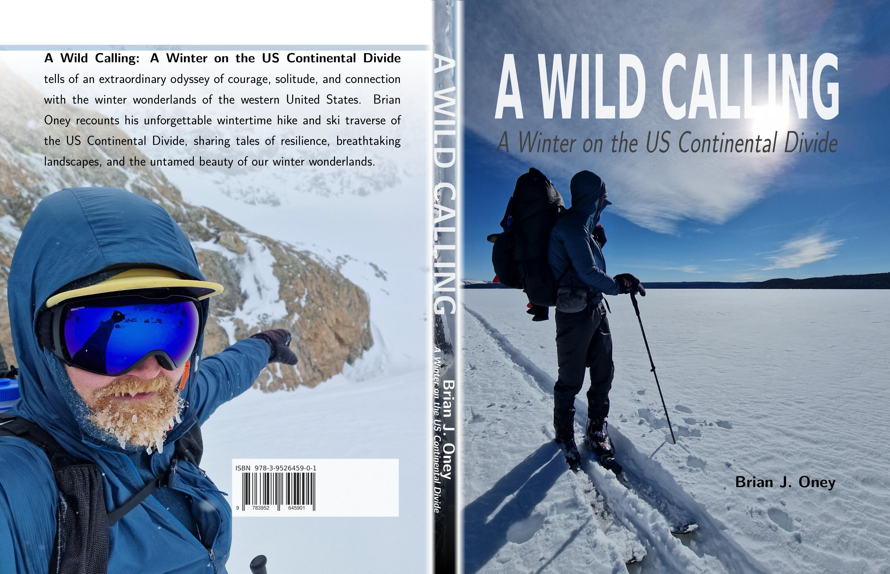

1. A Wild Calling

The firsthand account of the first winter ski traverse of the Continental Divide Trail
From November 21st, 2022 to June 3rd, 2023, I completed what no one had done before: a winter traversal of the Continental Divide through the Rocky Mountains, from the Mexican border to Canada. This is the story of 194 days in the wilderness, 3,100 miles through the Rockies – 2,200 on skis and 900 on foot – and one person's attempt to answer a wild calling.
1.1. What's Inside
- ~200 pages of narrative and reflection
- ~180 color photographs from the trail
- ~20 detailed route maps
- Real accounts of decision-making in extreme conditions
1.2. Get Your Copy
Order your copy through the Skitraverse webshop:
All orders print on demand by Lulu Press, a certified B-Corp that focuses on sustainable printing and treating their workers well. Books ship with tracking from a printing facility nearest you, wherever you are on our globe.
1.3. The Journey
On November 21st, 2022, I stood at Crazy Cook Monument on the New Mexico-Mexico border with a simple goal: traverse the Continental Divide in winter. What followed were 194 days that tested every limit I thought I had.
The first month I hiked through New Mexico's high desert, waiting for snow. By December 20th, near Ghost Ranch, I strapped on skis and didn't take them off for the next four months. Each day meant 8-12 hours of movement, climbing 1,500-2,000 meters (5,000-6,500 feet) vertical, carrying everything I needed to survive.
The winter of 2022-2023 was a transition year from La Niña to El Niño - one of the snowiest and coldest on record for the Rocky Mountain West. Wyoming experienced its snowiest winter on record in multiple locations. I was thankful for plenty of snow to ski on, though constant storms and deep powder slowed progress considerably.
The southern Wind River Range in late January brought the coldest conditions of the traverse. An arctic front blasted the Centennial Mountains in mid-February with reports of -25°F (-30°C) and 30mph winds. I postponed Colorado's high peaks and the northern Winds until late spring, unwilling to gamble against unpredictable avalanche conditions.
On April 15th, 2023, I reached the Canadian border at Waterton with my partner Lukas S. But I wasn't finished. I returned south to complete what I'd skipped: the Wind River high country, then Colorado's technical terrain. On June 3rd, 2023, around 7:30pm, I finished at Devil's Thumb Trailhead near Fraser, Colorado.
In total: 194 days covering some 5,000 kilometers, with 3,500 kilometers (2,200 miles) traveled on skis. I suffered no frostbite injuries, no major traumas, and was not caught in an avalanche - though I intentionally triggered one.
1.4. Why This Book Matters
I didn't write this for glory or record books. I wrote it for the people who helped me along the way - the trail angels, the friends who resupplied me, my family who supported a crazy idea. I wrote it for wilderness lovers who don't fear insignificance but embrace it. And for anyone who has ever wondered: Why not give it a try?
1.5. Frequently Asked Questions
1.5.1. What makes this the "first" winter traverse?
This was the first continuous winter ski traverse of the Continental Divide from Mexico to Canada. While sections have been skied before, no one had previously completed the entire route during a single winter season, carrying full winter camping gear and food for multi-week sections.
1.5.2. How dangerous was it?
Extremely. Avalanche risk, hypothermia, frostbite, and complete isolation were constant companions. I spent weeks without seeing another person. The book doesn't shy away from the close calls and poor decisions that nearly ended the journey.
1.5.3. What experience did you have before this?
I hold Swiss Alpine Club backcountry and alpine ski guide certifications (Tourenleiter I & II). I've completed multi-week traverses in the Alps and Bulgaria. But nothing fully prepares you for 194 consecutive days in winter conditions. See my full background.
1.5.4. Is this book just for extreme athletes?
No. While the physical challenge is real, the book is fundamentally about decision-making, solitude, fear, and what happens when you strip away everything comfortable. It's for anyone who appreciates honest storytelling about pushing boundaries.
1.5.5. When will it be available?
The hardcover and e-book are available now. Supporter Edition copies were distributed in September 2025. A book promotion tour took place September 12-30, 2025.
1.5.6. What format should I get?
The hardcover includes 180 full-color photographs and 20 detailed maps that are best experienced in print. The e-book is available for those who prefer digital or want immediate access.
1.5.7. Where can I buy it?
Order directly through the Skitraverse webshop, or contact me directly for signed copies.
1.6. About the Author
Brian J. Oney is a Swiss-certified alpine ski guide who has spent over a decade exploring winter mountain environments. His credentials include:
- Swiss Alpine Club Backcountry Ski Guide (Tourenleiter I, 2017)
- Swiss Alpine Club Alpine Ski Guide (Tourenleiter II, 2021)
- Winter ski traverse of Bulgaria's Pirin and Rila Mountains (2022)
- First ski traverse of the Continental Divide Trail (2022-2023)
Before attempting the Continental Divide, Brian completed extensive alpine training in Switzerland, including multi-week hut-to-hut traverses and high-altitude winter ascents.
2. Staying up to date
Subscribe below to receive updates about the book, upcoming talks, and future expeditions.
2.1. Book Timeline
| 2023-06-30 | 1st draft started |
| 2024-12-01 | 3rd draft complete |
| 2025-09-03 | Supporter Edition printing |
| 2025-09-12—30 | Book promotion tour |
| 2025-12-14 | Book ready for print |
| 2025-12-21 | E-Book ready for distribution |